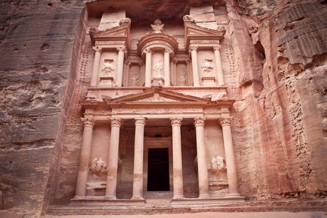
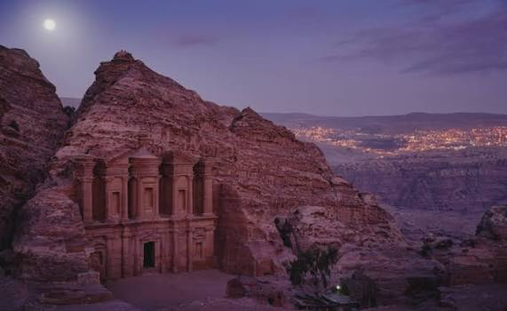
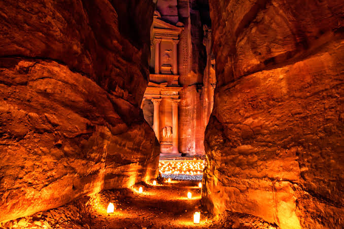
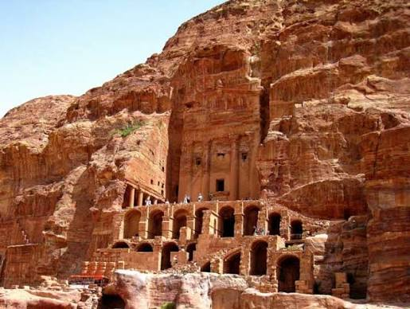

الخزنة
أشهر معالم البتراء، وهي واجهة أثرية منحوتة في الصخر وتتميز بتصميمها المعماري الفريد.

البتراء مدينة أثرية تقع في جنوب الأردن، وهي من أشهر المعالم السياحية في المملكة. عُرفت باسم المدينة الوردية بسبب لون الصخور التي نُحتت فيها مبانيها.
تقع البتراء في محافظة معان، بالقرب من بلدة وادي موسى، وتتميز بموقعها الجغرافي بين الجبال الصخرية.
ارتبطت البتراء بالأنباط، وهم شعب عربي قديم اتخذها عاصمة لمملكته، واشتهروا بالتجارة والهندسة المعمارية وإدارة المياه.
بسبب الألوان الوردية والحمراء والبرتقالية التي تظهر في الصخور الرملية المنحوتة التي تتكون منها معالم المدينة.
كانت البتراء مركزاً تجارياً مهماً بسبب موقعها على طرق التجارة القديمة التي ربطت شبه الجزيرة العربية ببلاد الشام ومناطق أخرى.
تميز الأنباط بقدرتهم على بناء أنظمة متطورة لجمع المياه وتخزينها ونقلها، مما ساعدهم على العيش في بيئة صحراوية.
أُدرجت البتراء على قائمة التراث العالمي لليونسكو عام 1985، وأصبحت واحدة من أهم الوجهات السياحية في الأردن.
تضم البتراء العديد من المعالم الأثرية التي تعكس مهارة الأنباط في النحت والبناء.

أشهر معالم البتراء، وهي واجهة أثرية منحوتة في الصخر وتتميز بتصميمها المعماري الفريد.

أحد أكبر المعالم المنحوتة في البتراء، ويتميز بواجهته الضخمة وموقعه المرتفع.

ممر صخري طبيعي طويل يقود الزوار إلى الخزنة، ويتميز بجدرانه الصخرية المرتفعة.

مجموعة من الواجهات الصخرية الكبيرة التي تتميز بزخارفها وتفاصيلها المعمارية.
يمكن للزائر الاستمتاع بمجموعة متنوعة من الأنشطة والتجارب السياحية.
التجول بين المعالم الأثرية والتعرف على تاريخ الحضارة النبطية.
الاستمتاع بالمسارات الجبلية ومشاهدة المناظر الطبيعية.
التقاط الصور للواجهات الصخرية والمناظر الطبيعية المميزة.
التعرف على التراث المحلي والحرف اليدوية والمنتجات التقليدية.
المعرفة التاريخية: التعرف على الحضارة النبطية وتاريخ الأردن.
التجربة الثقافية: اكتشاف التراث المحلي والعادات والتقاليد.
الاستمتاع بالطبيعة: مشاهدة الجبال والصخور ذات الألوان المميزة.
المغامرة: تجربة المشي واستكشاف المسارات الجبلية.